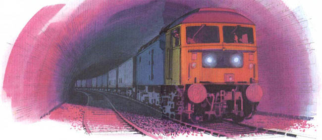
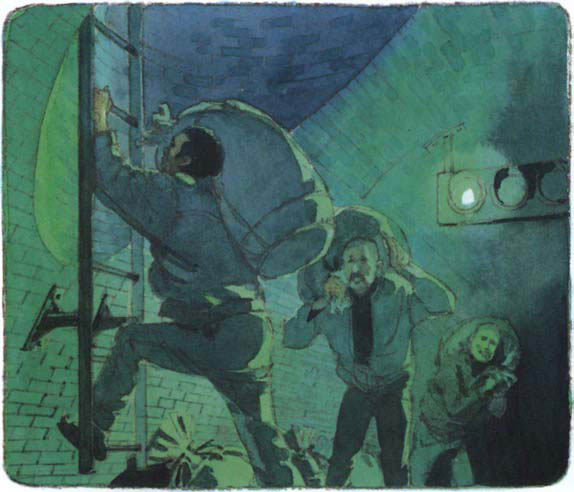
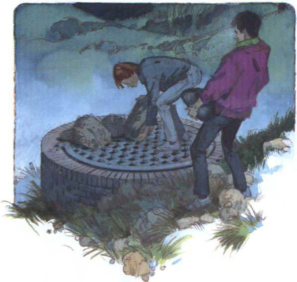

Listen to Part 1:
Chuyến tàu hỏa đi từ London đang đi trong đường hầm khá dài.
Người lái tàu nói chuyện với người đồng hành: "Đèn tín hiệu màu đỏ. Lạ thật đấy".
Chuyến tàu đi chậm dần và dừng lại trên đoạn đường cong trong đường hầm.
Người bạn đồng hành của lái tàu quay đầu ra nhìn, không còn thấy toa cuối cùng của chuyến tàu nữa.

Bạn đồng hành của người lái hỏi: "Của cải trong toa bảo vệ thế nào?".
Người lái tàu đáp: "Đừng lo. Pete là bảo vệ giỏi lắm".
Người lái tàu nhìn chằm chằm vào đèn tín hiệu. Vẫn màu đỏ. Chuyến tàu đợi trong đường hầm dài.
Frank và đồng bọn cũng đang trong đường hầm. Chúng đợi ở chân hầm. Chuyến tàu đi chậm lại và dừng hẳn. Toa bảo vệ ở ngay trước mặt chúng.
Frank thoăn thoắt trèo lên. Anh ta mở cửa toa bảo vệ và nhìn vào.
Listen to Part 2:
Frank nói với những tên còn lại đứng bên dưới: "Ổn hết rồi. Anh bảo vệ uống cà phê rồi. Anh ta đang ngủ".
Frank ném các bao tiền xuống.
Anh ta ra lệnh cho đồng bọn: "Ném các bao rỗng lên. Nhanh tay lên. Chúng ta không được nhiều thời gian đâu".
Một lúc sau, Frank và đồng bọn tụ họp dưới chân hầm. Cả bọn đang mang những bao tiền.

Frank nói: "Mang tiền đến ngôi nhà kia. Sẽ theo sau ngay".
Đèn tín hiệu chuyển từ màu đỏ sang màu xanh. Chuyến tàu chạy về Nhà ga Llanvoy.
Frank thầm nghĩ: "Tốt quá. Kế hoạch đã thành công rồi".
Trên đầu đường hầm, Sheila và Paul làm việc nhanh chóng trong bóng tối. Lối vào đường hầm có một tấm sắt lớn. Hai người kéo tấm sắt xuống, chặn lối ra và kê thêm đá nặng lên trên.
Tên đi đầu nhóm của Frank trèo lên đến đầu đường hầm. Hắn đập đầu vào tấm sắt. Hắn giơ tay lên đẩy, nhưng tấm sắt vẫn không nhúc nhích.
Listen to Part 3:
Hắn kêu lên: "Có chuyện gì đó. Tôi ra ngoài không được".
Những tên khác đứng phía dưới đường hầm vẫn đợi. Bọn chúng bị mắc kẹt rồi.
